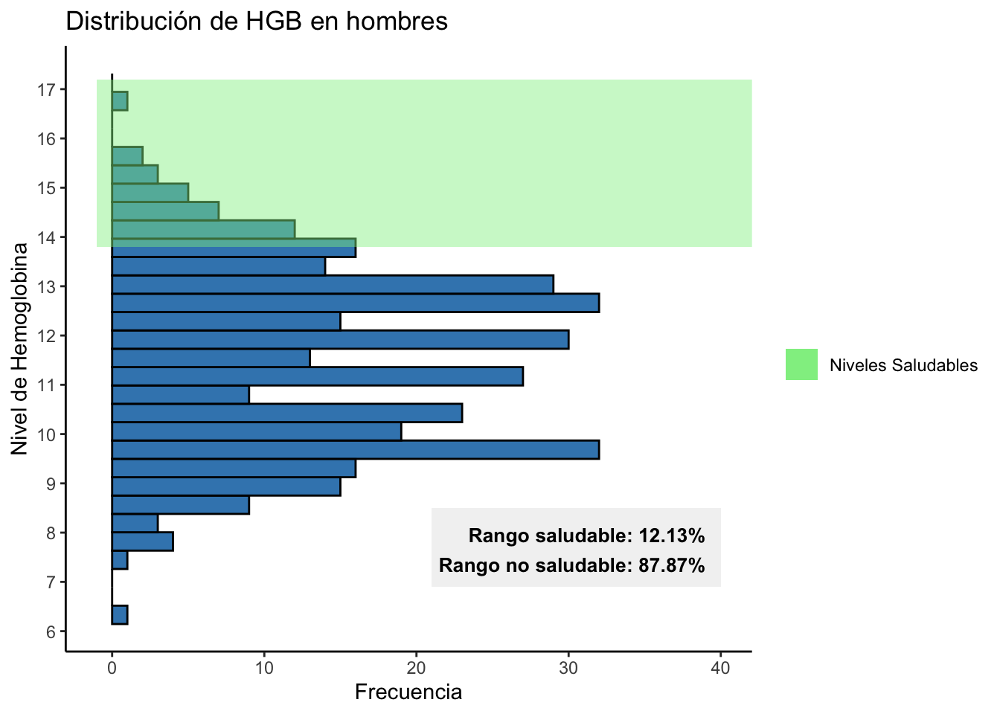
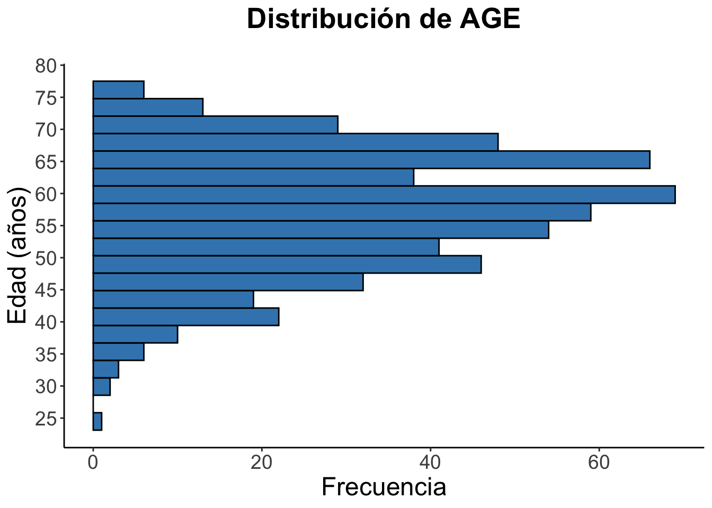
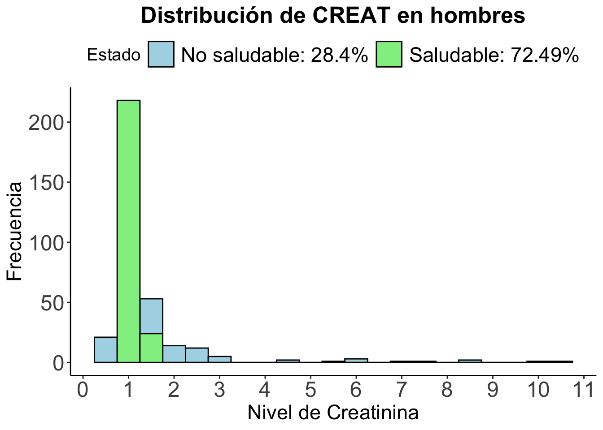

Loading required package: ggpubr
Attaching package: 'survminer'
The following object is masked from 'package:survival':
myeloma
library(xtable)library(kableExtra)
Attaching package: 'kableExtra'
The following object is masked from 'package:dplyr':
group_rows
library(gt) # Para una mejor visulización de las tablaslibrary(gridExtra) # Para poner gráficos uno al lado del otro
Attaching package: 'gridExtra'
The following object is masked from 'package:dplyr':
combine
library(ggcorrplot) # Para la creación del gráfico de correlaciónlibrary(dplyr)library(patchwork)library(scales)
Attaching package: 'scales'
The following object is masked from 'package:purrr':
discard
The following object is masked from 'package:readr':
col_factor
Datos
Análisis exploratorio de los datos
La base de datos Arkansas está formada por 564 observaciones de las cuales se tomaron 23 variables, de las cuales usaremos X para nuestro estudio.
Variables de estudio
Variable
Usada
Explicación
original order
No
Orden de los datos
PATID
No
Identificación Paciente
PROT
Si
Tratamiento Recibido ("TT2" o "TT3")
SEX
Si
Sexo del paciente ("male" o "female")
RACE
No
Raza del paciente ("white" o "other")
ISOTYPE
No (de momento)
Isotipo del paciente ("IgA" , "IgG", "IgM" o "IgE")
AGE
Si
Edad del paciente (en meses)
B2M
Si
Niveles de Microglobulina beta-2 (en mg/l)
CRP
Si
Niveles de Proteína C-Reactiva (en mg/l)
CREAT
Si
Niveles de Creatinina (en mg/dl)
LDH
Si
Niveles de Lactato Deshidrogenasa (en U/l)
ALB
Si
Niveles de Albúmina (en g/l)
HGB
Si
Niveles de Hemoglobina (en g/dl)
ASPC
Si
Células plasmáticas en aspirado de médula ósea
BMPC
Si
Células plasmáticas en biopsia de médula ósea
MRI
Si
Número de lesiones focales
Cyto_Abn
Si
Indica si presenta mutaciones citogenéticas (0 = No , 1 = Sí)
CPS1
No
Variable sin contexto
CPR1
No
Variable sin contexto
EFS_Censor
No (de momento)
Indica si el paciente ha recaido (0 = No | 1 = Sí)
EFS_Time
No (de momento)
Tiempo sin recaer (en meses)
OS_Censor
Si
Indica si el paciente falleció (0 = No | 1 = Sí)
OS_Time
Si
Tiempo de supervivencia (en meses)
Algunos de los pacientes presentan censura, es decir, en su último control, este, no había fallecido. Además, algunas de las observaciones tienen datos faltantes, veamos cuales son estas variables y cuantos datos faltan para cada una y contabilicemos el nivel de censura que presentan los datos.
Datos faltantes por variable
Variable
Datos faltantes
MRI
37
ASPC
28
ISOTYPE
26
BMPC
16
CRP
4
CREAT
3
B2M
1
También es interesante determinar si los niveles de las variables clínicas se encuentran en niveles sanos. Para eso, añadimos a nuestra base de datos estas variables. Los niveles sanos de las diferentes variables se han obtenido de MayoClinic y MedlinePlus.
`stat_bin()` using `bins = 30`. Pick better value with `binwidth`.
`stat_bin()` using `bins = 30`. Pick better value with `binwidth`.
`stat_bin()` using `bins = 30`. Pick better value with `binwidth`.
`stat_bin()` using `bins = 30`. Pick better value with `binwidth`.
`stat_bin()` using `bins = 30`. Pick better value with `binwidth`.
`stat_bin()` using `bins = 30`. Pick better value with `binwidth`.
`stat_bin()` using `bins = 30`. Pick better value with `binwidth`.
`stat_bin()` using `bins = 30`. Pick better value with `binwidth`.
`stat_bin()` using `bins = 30`. Pick better value with `binwidth`.
`stat_bin()` using `bins = 30`. Pick better value with `binwidth`.
`stat_bin()` using `bins = 30`. Pick better value with `binwidth`.
`stat_bin()` using `bins = 30`. Pick better value with `binwidth`.

`stat_bin()` using `bins = 30`. Pick better value with `binwidth`.
`stat_bin()` using `bins = 30`. Pick better value with `binwidth`.

library(scales)grafico_AGE = Arkansas %>%ggplot(aes(x = AGE)) +geom_histogram(aes(y = ..count..), fill ="#1f78b4", color ="black", alpha =0.9) +# Añadir los valores encima de cada barrageom_text(stat ="bin", aes(label = ..count.., y = ..count.. +1.5), size =4, position =position_identity()) +# Títulosggtitle("Distribución de AGE") +labs(x ="Edad (en años)", y ="Frecuencia") +scale_x_continuous(breaks =pretty_breaks(n =10)) +theme_classic() # Gira el gráfico a horizontalgrafico_AGE
Warning: The dot-dot notation (`..count..`) was deprecated in ggplot2 3.4.0.
ℹ Please use `after_stat(count)` instead.
`stat_bin()` using `bins = 30`. Pick better value with `binwidth`.
`stat_bin()` using `bins = 30`. Pick better value with `binwidth`.

ggplot(Arkansas, aes(x = AGE)) +geom_histogram(binwidth =5, fill ="#56B4E9", color ="black") +labs(title ="Distribución de la Edad", x ="Edad (en meses)", y ="Frecuencia") +theme_minimal()+geom_segment(aes(x =quantile(Arkansas$AGE, 0.25), y =-1, yend =115 , xend =quantile(Arkansas$AGE, 0.25)), linetype =2, linewidth =0.8) +annotate(geom ="text", x =quantile(Arkansas$AGE, 0.25), y =120, label ="Q1")
Warning: Use of `Arkansas$AGE` is discouraged.
ℹ Use `AGE` instead.
Use of `Arkansas$AGE` is discouraged.
ℹ Use `AGE` instead.
Warning in geom_segment(aes(x = quantile(Arkansas$AGE, 0.25), y = -1, yend = 115, : All aesthetics have length 1, but the data has 564 rows.
ℹ Please consider using `annotate()` or provide this layer with data containing
a single row.
Variables categoricas
# Crear el gráfico de barrasggplot(na.omit(Arkansas), aes(x = ISOTYPE)) +geom_bar(fill ="#56B4E9", color ="black") +# Añadir las frecuencias sobre cada barrageom_text(stat ="count", aes(label = ..count..), vjust =-0.5, size =5) +# Mejorar la estética del gráficolabs(title ="Distribución de ISOTYPE", x ="Isotipo", y ="Frecuencia") +ylim(0, max(table(Arkansas$ISOTYPE)) *1.1) +# Aumenta el límite del eje y un 10%theme_minimal() +theme(plot.title =element_text(hjust =0.5, size =16, face ="bold"),axis.text =element_text(size =12),axis.title =element_text(size =14) )
# Crear el gráfico de barrasggplot(na.omit(Arkansas), aes(x = RACE)) +geom_bar(fill ="#56B4E9", color ="black") +# Añadir las frecuencias sobre cada barrageom_text(stat ="count", aes(label = ..count..), vjust =-0.5, size =5) +# Mejorar la estética del gráficolabs(title ="Distribución de RACE", x ="Raza", y ="Frecuencia") +ylim(0, max(table(Arkansas$RACE)) *1.1) +# Aumenta el límite del eje y un 10%theme_minimal() +theme(plot.title =element_text(hjust =0.5, size =16, face ="bold"),axis.text =element_text(size =12),axis.title =element_text(size =14) )
ggplot(Arkansas, aes(x = Cyto_Abn)) +geom_bar(fill ="steelblue") +labs(title ="Diagrama de Barras de Cyto_Abn", x ="Alteraciones Citogenéticas", y ="Frecuencia") +scale_x_continuous(breaks =c(0, 1), labels =c("Sin alteraciones", "Con alteraciones")) +geom_text(stat ="count", aes(label = ..count..), vjust =-0.5, size =5) +ylim(0,400)+theme_minimal()+theme(plot.title =element_text(hjust =0.5, size =16, face ="bold"),axis.text =element_text(size =12),axis.title =element_text(size =14) )
# Seleccionar las variables de interés y omitir los NAvariables_interes <- Arkansas[,7:16] %>%na.omit()# Calcular la matriz de correlaciónmatriz_correlacion <-cor(variables_interes)# Generar el gráfico de correlaciónggcorrplot(matriz_correlacion, hc.order =TRUE, # Ordenar jerárquicamentetype ="lower", # Mostrar solo la mitad inferiorlab =TRUE, # Añadir los valores de correlaciónlab_size =3.5, # Tamaño del texto de los valorescolors =c("#4575b4", "#f7f7f7", "#d73027")) +# Colores personalizadosggtitle("Mapa de Correlación de Variables") +# Añadir títulolabs(x ="Variables", y ="Variables") +# Títulos de los ejestheme(plot.title =element_text(hjust =0.5, size =16), # Centrar el título y ajustar tamañoaxis.title.x =element_text(size =14), # Tamaño del título del eje xaxis.title.y =element_text(size =14)) # Tamaño del título del eje y
MODELO DE COX SIN DATOS FALTANTES
Para la primera sección, trabajaremos sin los datos faltantes. Definimos un nuevo data frame eliminando estas observaciones.
# Consideramos la base de datos sin datos faltantes.Arkansas_SinDatosFaltantes =na.omit(Arkansas)Arkansas_SinDatosFaltantes = Arkansas_SinDatosFaltantes[!Arkansas_SinDatosFaltantes$ISOTYPE =="Nonsecretory",]# Hay que convertir la Variable ISOTYPE en variables "dummies"Arkansas_SinDatosFaltantes <-model.matrix(~ISOTYPE -1, data = Arkansas_SinDatosFaltantes) %>%as.data.frame() %>%cbind(Arkansas_SinDatosFaltantes)
Calculamos, para cada variable, un modelo de Cox univariable para observar la significancia individual que tienen.
# Generar el archivo LaTeX con la tablatabla_latex <-xtable(res, caption ="Descripción del modelo univariante", label ="Tabla: Cox Univariante")# Guardar el archivo LaTeX en un archivo .texprint(tabla_latex, file ="/Users/marc/Downloads/TFG/R/TFGMarcArrom/Output/Graphs_tables/tabla_cox_univariante.tex", include.rownames =TRUE)observaciones_con_censura =sum(Arkansas$OS_Censor)
Análisis del modelo univariable
El P.valor de las variables de SEX, PROT, CRP y ISOTYPE nos indica que el nivel de sinificancia en el riesgo de muerte no es relevante.
Por otra parte, tenemos otras variables que si contribuyen al riesgo de muerte, como son la AGE, el ASPC, BMPC, MRI, HGB.
Por último, los variables con mayor signifinacia son B2M, CREAT, LDH, ALB y Cyto_Abn.
Aunque la edad aparece con una signifancia “media”, hay que tener en cuenta que la mayoria de los individuos, el 75% de ellos, tienen más de 50 años. Por lo que, en la base de datos, no tenemos suficientes individuos para representar a la población joven.
Realicemos un estudio para determinar cual de las 13 variables consideradas son significativas para construir el modelo.
Realizamos ahora, con las variables significativas, un modelo multivariante
# Ajustar el modelo de Coxmod1 <-coxph(Surv(OS_Time, OS_Censor) ~ B2M + CREAT + LDH + ALB + Cyto_Abn + AGE + ASPC + BMPC + MRI + HGB, data = Arkansas)# Resumir el modelomod1_summary <-summary(mod1)# Crear un dataframe con los coeficientes y otras estadísticas de interéstabla_cox <-data.frame(coef =round(mod1_summary$coefficients[, "coef"], 5),exp_coef =round(mod1_summary$coefficients[, "exp(coef)"], 5),se_coef =round(mod1_summary$coefficients[, "se(coef)"], 5),z =round(mod1_summary$coefficients[, "z"], 3),p_value = mod1_summary$coefficients[, "Pr(>|z|)"])# Cambiar los nombres de las columnas para que sean más comprensiblescolnames(tabla_cox) <-c("Coeficiente Beta", "Exp(Coef)", "Error Estándar", "Z-valor", "P-valor")# Mostrar la tabla generadaprint(tabla_cox)
# Crear la tabla y guardarla en un archivo PDFkable(tabla_cox, format ="latex", booktabs =TRUE, caption ="Resultados del modelo de Cox") %>%kable_styling(latex_options =c("hold_position")) %>%save_kable("/Users/marc/Downloads/TFG/R/TFGMarcArrom/Output/Graphs_tables/tabla_cox_multivariante.tex")
Observamos que cuando combinamos las variables más significativas, algunas de obtienen un valor muy elevado, destaca el caso de la CREAT, que obtiene un p-valor muy próximo a 1.
Esto, es debido a la multicolinealidad, es dicir, a que hay variables que tienen un alto grado de correlación con otras y el modelo no es capaz de identificar cual de las dos variables es la que es significativa en el modelo.
Para la selección de las variables y evitar la multicolinealidad, usaremos el método de selección hacia atrás
# Ajustar el modelo inicial con todas las variablesmodelo_inicial <-coxph(Surv(OS_Time, OS_Censor) ~ AGE + SEX + PROT + B2M + ISOTYPEFLC + ISOTYPEIgA + ISOTYPEIgD + ISOTYPEIgG + CRP + CREAT + LDH + ALB + HGB + ASPC + BMPC + MRI + Cyto_Abn, data = Arkansas_SinDatosFaltantes)# Aplicar selección hacia atrásmodelo_backward <-step(modelo_inicial, direction ="backward")
# Crear un dataframe con los coeficientes y estadísticas del modelo ajustadotabla_backward <-data.frame(coef =formatC(modelo_backward_summary$coefficients[, "coef"], 5),exp_coef =formatC(modelo_backward_summary$coefficients[, "exp(coef)"], format ="g", digits =5),se_coef =formatC(modelo_backward_summary$coefficients[, "se(coef)"], format ="g", digits =5),z =formatC(modelo_backward_summary$coefficients[, "z"], format ="g", digits =5),p_value =formatC(modelo_backward_summary$coefficients[, "Pr(>|z|)"], format ="g", digits =2 ))# Renombrar las columnas para mayor claridadcolnames(tabla_backward) <-c("Coeficiente", "Exp(Coef)", "Error Estándar", "Z-valor", "P-valor")# Mostrar la tabla generadaprint(tabla_backward)
# Convertir la tabla a formato LaTeXtabla_latex <-xtable(tabla_backward, caption ="Resultados del modelo final después de selección hacia atrás")# Guardar la tabla en un archivo .tex para Overleafprint(tabla_latex, file ="/Users/marc/Downloads/TFG/R/TFGMarcArrom/Output/Graphs_tables/tabla_cox_backward.tex", include.rownames =TRUE)
Estadístico de decisión de las variables
Comparisons between a number of possible models, which need not nec- essarily be nested, can also be made on the basis of Akaike’s information criterion, given by AIC = −2 log Lˆ + 2q, in which q is the number of unknown β-parameters in the model. The smaller the value of this statistic, the better the model, but unlike the −2 log Lˆ statis- tic, the value of AIC will tend to increase when unnecessary terms are added to the model.
ANÁLISIS DEL MÓDELO “FINAL”
age: El coeficiente es positivo (0.016140), lo que sugiere que un aumento en la edad incrementa ligeramente el riesgo, pero el valor p (0.063447) indica que el efecto es marginalmente significativo (cercano a 0.05, pero no lo suficiente). B2M: Tiene un coeficiente positivo (0.045930), lo que indica que el aumento en B2M incrementa el riesgo de manera significativa (p = 2.81e-06). Su HR es 1.047, lo que significa que por cada unidad adicional en B2M, el riesgo aumenta en un 4.7%. LDH: También tiene un coeficiente positivo y es altamente significativo (p = 0.000197). Un aumento en LDH incrementa el riesgo, aunque en menor magnitud, un 0.04% (HR = 1.004). ALB: El coeficiente es negativo (-0.438302), lo que significa que un aumento en la albúmina disminuye el riesgo. Es un efecto significativo (p = 0.000637) y el HR de 0.645131 indica una reducción del 35.49% en el riesgo por cada unidad adicional de albúmina. MRI: Tiene un coeficiente positivo y significativo (p = 0.013479), indicando que un aumento en los valores de MRI incrementa el riesgo (HR = 1.011635). Cyto_Abn: Tiene un coeficiente positivo (0.604041), lo que indica que la presencia de anomalías citogenéticas aumenta significativamente el riesgo (p = 0.000283), con un HR de 1.829496, es decir, el riesgo se incrementa en un 82.95%.
GRÁFICO QUE MUESTRA COMO SE VAN ELIMINANDO LAS VARIABLES
# Crear manualmente el data frame con las variables y las iteracionesvariables <-c("PROT","Age", "Sex", "B2M", "CRP", "CREAT", "LDH", "ALB", "HGB", "ASPC", "BMPC", "MRI", "Cyto_Abn")# Asignar en qué iteración fue eliminada cada variable (0 si no fue eliminada)eliminadas_iteracion <-c(5,0, 4, 0, 3, 2, 1, 0, 8, 6, 7, 0, 0)# Crear el data frame con las variables y las iteraciones de eliminacióndf <-data.frame(Variable = variables, Iteracion_Eliminada = eliminadas_iteracion)# Máximo número de iteraciones (ajusta según tu caso)max_iter <-8# Crear un nuevo data frame para indicar presencia (1) o eliminación (0)iteraciones_df <-data.frame(Variable =rep(variables, each = max_iter),Iteracion =rep(1:max_iter, times =length(variables)),Status =1)# Modificar el status a 0 cuando la variable fue eliminadafor (i in1:nrow(df)) {if (df$Iteracion_Eliminada[i] >0) { iteraciones_df$Status[iteraciones_df$Variable == df$Variableble[i] & iteraciones_df$Iteracion >= df$Iteracion_Eliminada[i]] <-0 }}# Filtrar sólo las filas donde la variable aún está presente (Status == 1)iteraciones_df <- iteraciones_df[iteraciones_df$Status ==1, ]# Crear el gráfico con líneas horizontales para cada variableggplot(iteraciones_df, aes(x = Iteracion, y = Variable)) +geom_line(aes(group = Variable), size =1.5) +# Colorear cada variable de forma distintalabs(title ="Proceso de eliminación de variables manual",x ="Iteraciones", y ="Variables") +scale_x_continuous(breaks =seq(0, max_iter, by =1)) +theme_minimal() +theme(legend.position ="none") # Eliminar leyenda si no es necesaria
Warning: Using `size` aesthetic for lines was deprecated in ggplot2 3.4.0.
ℹ Please use `linewidth` instead.
Gráfico del modelo de Cox
curva_supervivencia <-survfit(modelo_backward)# Graficar las curvasggsurvplot(curva_supervivencia, data = Arkansas, conf.int =TRUE, # Añadir intervalo de confianzapval =TRUE, # Mostrar valor prisk.table =TRUE, # Mostrar tabla de riesgosggtheme =theme_minimal(),# Tema estéticopalette =c("#E69F00", "#56B4E9")) # Colores personalizables
Warning in .pvalue(fit, data = data, method = method, pval = pval, pval.coord = pval.coord, : There are no survival curves to be compared.
This is a null model.
# Crear el objeto gráficocurva_supervivencia <-survfit(modelo_backward)# Crear el gráficoplot_supervivencia <-ggsurvplot(curva_supervivencia, data = Arkansas, conf.int =TRUE, # Añadir intervalo de confianzarisk.table =FALSE, # Mostrar tabla de riesgosggtheme =theme_minimal(),# Tema estéticopalette =c("#E69F00", "#56B4E9"), # Colores personalizableslegend ="none",title ="MODELO DE COX \"BACKWARD\" ",xlab ="Tiempo (en meses)",ylab ="Probabilidad de superviviencia" ) # Guardar el gráfico como PDFggsave(filename ="/Users/marc/Downloads/TFG/R/TFGMarcArrom/Output/Graphs_tables/grafico_modeloCoxBackward_VarCompletas.pdf", plot = plot_supervivencia$plot, # Extraer solo el gráfico principalwidth =10, height =7, device ="pdf") # Ajusta el tamaño y formatoprint(plot_supervivencia)
Gráficos Kaplan-Meier
Preparación de los datos
# Cargar la librería dplyrlibrary(dplyr)# Dataset transformado con nuevas columnas que indican si están en el rango (0) o fuera del rango (1)datosEstratificados <- Arkansas %>%mutate(AGE_flag =ifelse(AGE <=50, 0, 1), B2M_flag =ifelse(B2M <=2.7, 0, 1), CREAT_flag =ifelse(SEX =="male"& CREAT >=0.74& CREAT <=1.35, 0, ifelse(SEX =="female"& CREAT >=0.54& CREAT <=1.04, 0, 1)),LDH_flag =ifelse(LDH >=122& LDH <=222, 0, 1), ALB_flag =ifelse(ALB >=3.5& ALB <=5, 0, 1), # Para MRI no hay niveles normales, lo dividimos por quantilesMRI_flag =ifelse(MRI <=quantile(na.omit(Arkansas$MRI), 0.25),0,ifelse(MRI >=quantile(na.omit(Arkansas$MRI), 0.25) & MRI <=quantile(na.omit(Arkansas$MRI), 0.75),1,2)) )# Mostrar las primeras filas del nuevo datasethead(datosEstratificados, 30)
# A tibble: 30 × 31
`original order` PATID PROT SEX RACE ISOTYPE AGE B2M CRP CREAT
<dbl> <dbl> <chr> <chr> <chr> <chr> <dbl> <dbl> <dbl> <dbl>
1 1 8241 TT2 female white IgG 53.4 1.8 8.6 0.6
2 2 9843 TT2 female white IgG 52.7 1.7 8.9 0.6
3 3 9888 TT2 male white Nonsecreto… 62.0 5.5 4.5 0.8
4 4 9835 TT2 male white IgA 60.3 2.8 9.9 1
5 5 9997 TT2 male white IgG 66.9 4 2.6 1.2
6 6 9992 TT2 female white IgA 55.3 2.9 2.1 1
7 7 10003 TT2 male white FLC 57.1 3.1 32.5 0.7
8 8 10021 TT2 male other IgG 55.9 1.7 8.6 0.8
9 9 9983 TT2 male white IgG 54.5 2.5 0.2 1.1
10 10 10107 TT2 male white IgA 59.7 3.3 1.8 1
# ℹ 20 more rows
# ℹ 21 more variables: LDH <dbl>, ALB <dbl>, HGB <dbl>, ASPC <dbl>, BMPC <dbl>,
# MRI <dbl>, Cyto_Abn <dbl>, CPS1 <dbl>, CPR1 <dbl>, EFS_Censor <dbl>,
# EFS_Time <dbl>, OS_Censor <dbl>, OS_Time <dbl>, AGE_flag <dbl>,
# B2M_flag <dbl>, CREAT_flag <dbl>, CRP_flag <dbl>, LDH_flag <dbl>,
# ALB_flag <dbl>, MRI_flag <dbl>, HGB_flag <dbl>
# Ajustar el modelo de supervivencia# Crear el gráfico de supervivenciaggsurvplot(survfit(Surv(OS_Time, OS_Censor) ~ AGE_flag, data = Arkansas), data = datosEstratificados, pval =TRUE,palette =c("#0072B2", "#D95F02", "#F0E442", "#999999") # Define la paleta de colores)
ggsurvplot(survfit(Surv(OS_Time, OS_Censor) ~ B2M_flag, data = Arkansas), data = datosEstratificados, pval =TRUE,palette =c("#0072B2", "#D95F02", "#F0E442", "#999999") # Define la paleta de colores)
ggsurvplot(survfit(Surv(OS_Time, OS_Censor) ~ ALB_flag, data = Arkansas), data = datosEstratificados, pval =TRUE,palette =c("#0072B2", "#D95F02", "#F0E442", "#999999") # Define la paleta de colores)
ggsurvplot(survfit(Surv(OS_Time, OS_Censor) ~ LDH_flag, data = Arkansas), data = datosEstratificados, pval =TRUE,palette =c("#0072B2", "#D95F02", "#F0E442", "#999999") # Define la paleta de colores)
ggsurvplot(survfit(Surv(OS_Time, OS_Censor) ~ MRI_flag, data = datosEstratificados), data = datosEstratificados, pval =TRUE,palette =c("#0072B2", "#D95F02", "#F0E442", "#999999") # Define la paleta de colores)
# Cargar el paquete survivallibrary(survival)# Ajustar modelos paramétricos con distintas distribucionesmodelo_exp <-survreg(Surv(OS_Time, OS_Censor) ~ AGE + SEX + PROT + B2M + ISOTYPEFLC + ISOTYPEIgA + ISOTYPEIgD + ISOTYPEIgG + CRP + CREAT + LDH + ALB + HGB + ASPC + BMPC + MRI + Cyto_Abn, data = Arkansas_SinDatosFaltantes, dist ="exponential")modelo_exp_backward <-step(modelo_exp, direction ="backward")
Warning in ggally_statistic(data = data, mapping = mapping, na.rm = na.rm, :
Removing 1 row that contained a missing value
Warning in ggally_statistic(data = data, mapping = mapping, na.rm = na.rm, :
Removing 1 row that contained a missing value
Warning in ggally_statistic(data = data, mapping = mapping, na.rm = na.rm, :
Removing 1 row that contained a missing value
`stat_bin()` using `bins = 30`. Pick better value with `binwidth`.
Warning: Removed 4 rows containing non-finite outside the scale range
(`stat_bin()`).
Warning: Removed 5 rows containing missing values or values outside the scale range
(`geom_point()`).
Warning: Removed 4 rows containing non-finite outside the scale range
(`stat_density()`).